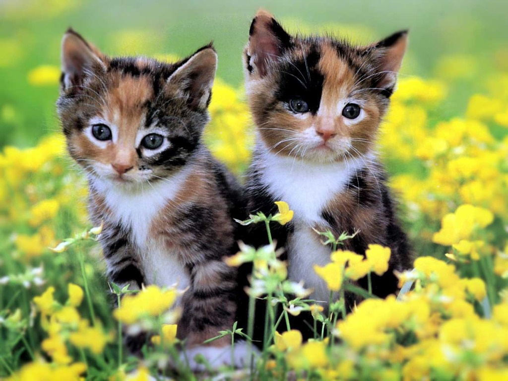

HOME
ABOUT
BLOG
JUNE 24 2025

The Irresistible Charm of Two Adorable Cats: A Glimpse into Pure Feline
Delight
In a world filled with daily hustle and fleeting moments, there’s
something undeniably soothing about the innocent gaze of a cat. Now
imagine not one, but two of these furry companions captured in perfect
harmony. A recent snapshot of two cute cats has taken the internet by
storm, reminding us once again why cats are among the most beloved animals
in the world. The first cat, a fluffy orange tabby with gentle amber eyes,
lounges lazily on a windowsill bathed in golden afternoon light. With its
soft fur slightly ruffled and one paw hanging over the ledge, it exudes
calm and quiet curiosity. There’s a playful glint in its eyes, suggesting
that it might spring into action at any momentor simply continue basking
in the sun. Beside it, the second cat offers a striking contrast. This
sleek black feline, with a shiny coat that seems to absorb the light, sits
upright with an elegant posture. Its piercing green eyes are focused on
something in the distance, as if guarding its friend or perhaps pondering
a grand feline mystery. Together, they create a heartwarming tableau of
comfort and companionship. What makes this picture so captivating isn't
just the beauty of the cats, but the emotion it evokes—peace, friendship,
and the quiet joy of being in good company. Whether you're a cat lover or
not, it’s hard not to smile at this moment of gentle feline charm. It’s a
simple reminder that sometimes, happiness is just two cats away.